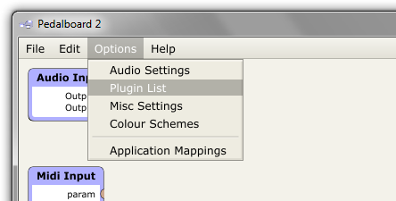
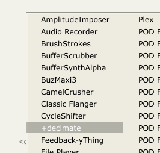

Getting Started
Assuming this is the first time you've used the app, there are a few things you'll want to setup before you can get the most out of it:
Audio Settings
To start off, you should check your audio settings are set up the way you want. The Audio Settings dialog can be accessed from the Options menu:
The available options are fairly standard, and should be familiar to you from other apps.
Given that the Pedalboard is intended for realtime use, I'd recommend a buffer size no more than 256 samples (this'll give you a total latency of about 10ms). On Windows, you're probably better off going with your soundcard's ASIO drivers, as they have traditionally had better low latency performance. On OSX the standard CoreAudio drivers should be fine.
The test button will send a short sine tone to your soundcard's output so you can check everything's working correctly. Also note that (although it's not shown here), you can select multiple MIDI inputs if your system has more than one interface.
Plugin List
Next you'll want to tell the app where to find your plugins. This is done from the Plugin List dialog, which can again be accessed from the Options menu:

Here you'll see a list of all the available plugins on your system, along with some useful metadata (of course, at the moment, all you can see is the Pedalboard's built-in processors).

To add your own plugins, click the Options... button, and select Scan for new or Updated VST plugins... (note: OSX users will also have an option to scan for AudioUnit plugins).
This will bring up the following window, where you can add and remove plugin directories with the + and - buttons.
Clicking Scan will then attempt to load all the plugins it finds in the directories you selected, one after the other, in order to check that they are valid plugins. Once the scan is complete you should see all your plugins listed in the Available Plugins window.
Your First Patch
Now that the app knows where to find your plugins, you can go ahead and use them in a patch. All Pedalboard patches start off looking like this:
{kind=link}
To add a plugin to the patch you simply double click in the main plugin field. This will pop up a menu like so:

Clicking on the plugin you're interested in will then add it to the patch. All plugins are represented the same way; input ports are on the left of the widget, output ports on the right. The three buttons along the bottom of the widget are, respectively:
- Edit: Opens the plugin's editor.
- Mappings: Opens the plugin's mappings window.
- Delete (x): Deletes the plugin from the patch.

To then connect the plugin to your soundcard's input, you simply drag from the relevant port on the Audio Input processor, to your desired port on the plugin.
{kind=link}
To delete a connection, click on it to select it, then press the delete or backspace key.
A Basic MIDI Mapping
One of the key motivations behind the development of the Pedalboard 2 was to provide an easy way of mapping plugin parameters to physical controllers, so I'll quickly walk you through the process of mapping a MIDI CC to a plugin parameter.
{kind=link}
The first step is to drag a connection from the Midi Input processor to the plugin's param input. By default this will automatically open the plugin's Mappings window.

In this window you can setup a MIDI mapping by clicking the add MIDI button.
{kind=link}
In the entry that is created, the left combo box selects the MIDI CC, and the right combo box selects the parameter it will be mapped to. If you play with your MIDI controller you should now see/hear the plugin's parameter changing accordingly. For an explanation of the other controls, see the MIDI Mappings page.
Switching Between Patches
The last thing I'll discuss in this guide is one of the app's other key features: patches. The Pedalboard is designed to make it easy to set up multiple patches and quickly switch between them. The main patch controls are located at the bottom left of the main screen:
To add a new patch, you just click the combo box's drop down button, and select <new patch>.
This will create a new patch, and you can now switch between it and your original patch either via the combo box, or via the +/- buttons to its right.
An important point to note is that patch switching can also be mapped to MIDI CCs or Open Sound Control messages. For more information, check the Application Mappings page.
I'm going to stop here, because this guide has already gotten awfie long, but be sure to check out the links on the left for more information.